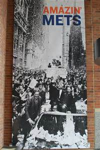

| Home Page | 1973 | 1986 | 2000 | 2015 |

The 1969 World Series was the first of two that the Mets have won to date. The series lasted 5 games in which the Mets won 4 straight after dropping the first. With the odds, stacked so heavily in the Orioles favor, it was a huge deal for the Mets to beat them in such a convincing manner. The series MVP was awarded to Donn Clendenon, as he had 3 home runs in the five games, a record for 5-game world series' to date.